library(dplyr)
library(tibble)
library(ggplot2)
library(ggforce)
library(ggfx)
library(flametree)
library(ambient)PIXEL FILTERS
The last technical topic I want to cover in this workshop is pixel filters, and specifically the ggfx package which makes it relatively easy to use them in conjunction with ggplot2. Phrased in the most general terms, a filter is any function that takes one image as input and returns a new (presumably modified!) image as output. As an example, think about how Instagram filters work: the original photo is used as the input, and the modified one is returned as output. This filtering takes place at the pixel level, so it’s not immediately obvious how we could do this with ggplot2. The way that the ggfx package handles this is to render render the image (or part of the image) off screen to obtain a representation that can be filtered. The filter is applied to that rendered image and then, when the final plot is constructed, the filtered versions are included in the final plot rather than the original ones.
In this session I’ll provide an introduction to ggfx. The API for ggfx takes a little while to wrap your head around, but once you’ve got a handle on it, it turns out to be a very powerful tool for generative art in R.
Prelude
When we dive into ggfx, it will be handy to have some data that we can use to make interesting art. For that purpose I’ll rely on the flametree package which I’ve used in the past to make pretty pictures of trees. The flametree_grow() function generates the raw data:
tree <- flametree_grow(
seed = 1,
time = 9,
angle = c(-15, 15, 30)
)
tree# A tibble: 3,069 × 12
coord_x coord_y id_tree id_time id_path id_leaf id_pathtree id_step seg_deg seg_len seg_col seg_wid
<dbl> <dbl> <int> <int> <int> <lgl> <chr> <int> <dbl> <dbl> <dbl> <dbl>
1 -0.429 0 1 1 1 FALSE 1_1 0 90 1 3 4.67
2 -0.429 0.5 1 1 1 FALSE 1_1 1 90 1 3 4.67
3 -0.429 1 1 1 1 FALSE 1_1 2 90 1 3 4.67
4 -0.429 1 1 2 2 FALSE 1_2 0 75 0.9 4 3.59
5 -0.429 1.45 1 2 2 FALSE 1_2 1 75 0.9 4 3.59
6 -0.196 1.87 1 2 2 FALSE 1_2 2 75 0.9 4 3.59
7 -0.429 1 1 2 3 FALSE 1_3 0 75 0.6 4 3.59
8 -0.429 1.3 1 2 3 FALSE 1_3 1 75 0.6 4 3.59
9 -0.274 1.58 1 2 3 FALSE 1_3 2 75 0.6 4 3.59
10 -0.196 1.87 1 3 4 FALSE 1_4 0 105 0.54 5 2.32
# … with 3,059 more rowsYou can render the output conveniently with the help of flametree_plot():
tree |>
flametree_plot(
background = "#222222",
palette = c("#ffffff", "#f652a0")
)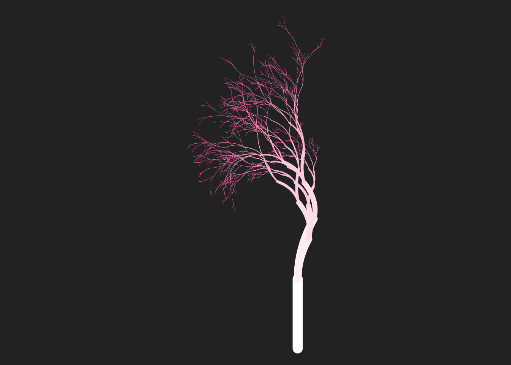
The flametree_plot() function is fairly flexible and allows you to draw the tree in several different styles, but for the purposes of this session we’ll want to write our own ggplot2 (and ggfx) code, so it may be helpful to explain what you’re looking at in this tree. Each curved segment in the tree is drawn as a Bézier curve specified by three control points whose locations are given by the coord_x and coord_y variables. Each row in the tibble refers to one control point, so there are three rows per segment. Here’s the three rows that correspond to the 99th segment in the tree:
tree |> filter(path_id == 99)# A tibble: 3 × 12
coord_x coord_y id_tree id_time id_path id_leaf id_pathtree id_step seg_deg seg_len seg_col seg_wid
<dbl> <dbl> <int> <int> <int> <lgl> <chr> <int> <dbl> <dbl> <dbl> <dbl>
1 -1.05 2.75 1 7 99 FALSE 1_99 0 180 0.140 9 0.161
2 -1.11 2.78 1 7 99 FALSE 1_99 1 180 0.140 9 0.161
3 -1.19 2.75 1 7 99 FALSE 1_99 2 180 0.140 9 0.161The various columns here describe different aspects of the tree: there’s a seg_wid column representing the width of each segment (usually mapped to the size aesthetic), a seg_col column specifying a colour (usually mapped to the colour aesthetic), etc.
Of particular relevance here is the id_leaf column. This column is a logical variable that is TRUE only for those control points that represent the very tips of the tree: the leaves, essentially. Later on I’m going to plot the tree trunk and leaves separately, so it’s convenient to have a leaf tibble that contains the data only for the leaf nodes:
leaf <- tree |> filter(id_leaf == TRUE)Okay, now let’s construct a flametree image piece by piece. I’ll start with a base plot that specifies some stylistic choices but doesn’t map any aesthetics, doesn’t include any data, and doesn’t have any geoms. It’s a blank canvas:
base <- ggplot() +
scale_size_identity() +
theme_void() +
coord_equal()Now I’m going to create the individual geoms. Usually when we write ggplot2 code we just add the geoms directly to the plot, and if my only intention was to show you how flametree works I’d do that here. But later I’m going to use this in conjunction with ggfx, and the design of ggfx is such that you (usually) apply a filter to a ggplot2 layer. The ggfx code will look a lot cleaner if we store our layers as variables.
First, let’s create a layer representing the leaves. The only thing we want to do with the leaf data is draw a scatter plot, and we can accomplish our goal using geom_point():
leaves <- geom_point(
mapping = aes(coord_x, coord_y),
data = leaf,
size = 1.3,
stroke = 0,
colour = "#e38b75"
)Now we can do the same thing to create the trunk. What we want in this case is something similar to geom_path(), but instead of plotting paths in linear segments we want to draw Bézier curves. Conveniently for us, the ggforce package supplies the geom_bezier() function that does exactly this. All we need to do is make sure we specify the group aesthetic so that there is one curve per segment in the tree. Here’s the code for doing that:
trunk <- geom_bezier(
mapping = aes(coord_x, coord_y, group = id_pathtree, size = seg_wid),
data = tree,
lineend = "round",
colour = "#555555",
show.legend = FALSE
)Having done all the work in this piecewise manner, the code to draw the tree is as simple as adding the trunk and leaves to the base image:
base + trunk + leaves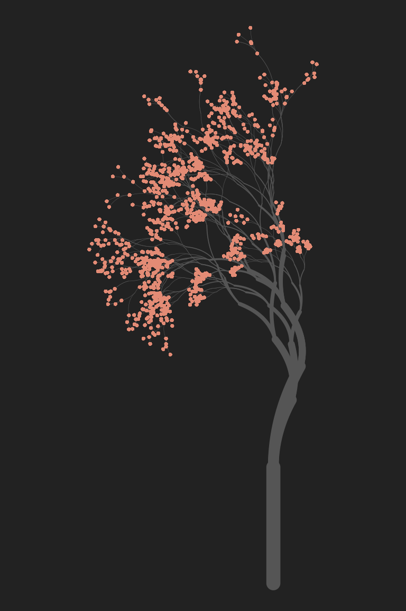
Very pretty!
Glow
…but it could be prettier, don’t you think? Maybe we could add a glow around the leaves, to give it a twinkling look. This feels like the kind of job for a pixel filter, and ggfx should be able to do this for us. Conceptually, what we want to do is apply a “glow” filter to the leaves of our tree, but not to the trunk. We can do that in ggfx by using the with_outer_glow() filtering function: we pass the leaves layer to the filter, along with some other arguments (e.g., colour) that specify the properties of the glow. The examples below show this in action: the left plot is the original tree, the middle one adds a small white glow to the leaves, and the right one adds a much bigger glow:
base + trunk + leaves
base +
trunk +
with_outer_glow(leaves, colour = "white")
base +
trunk +
with_outer_glow(leaves, colour = "white", sigma = 5, expand = 3)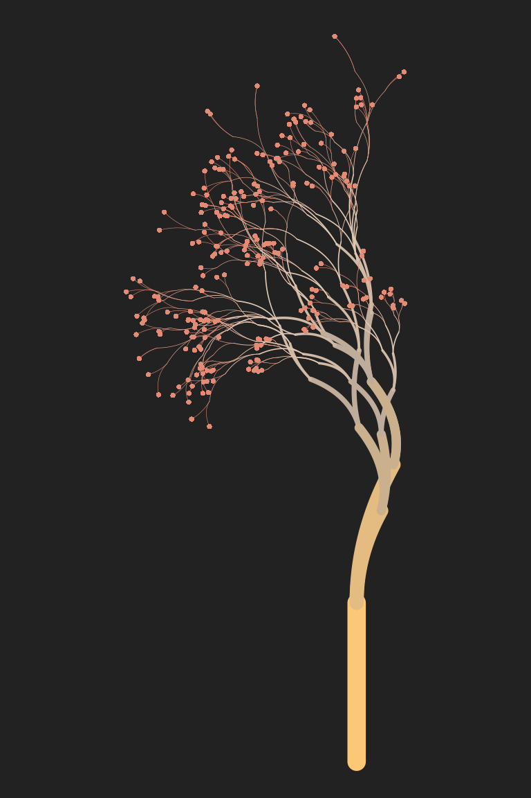
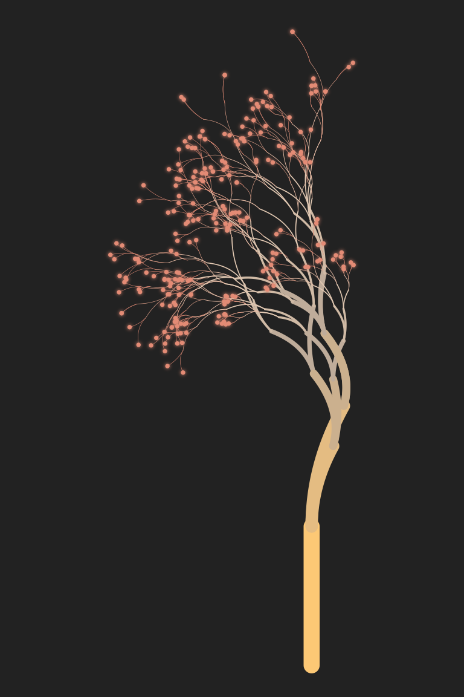
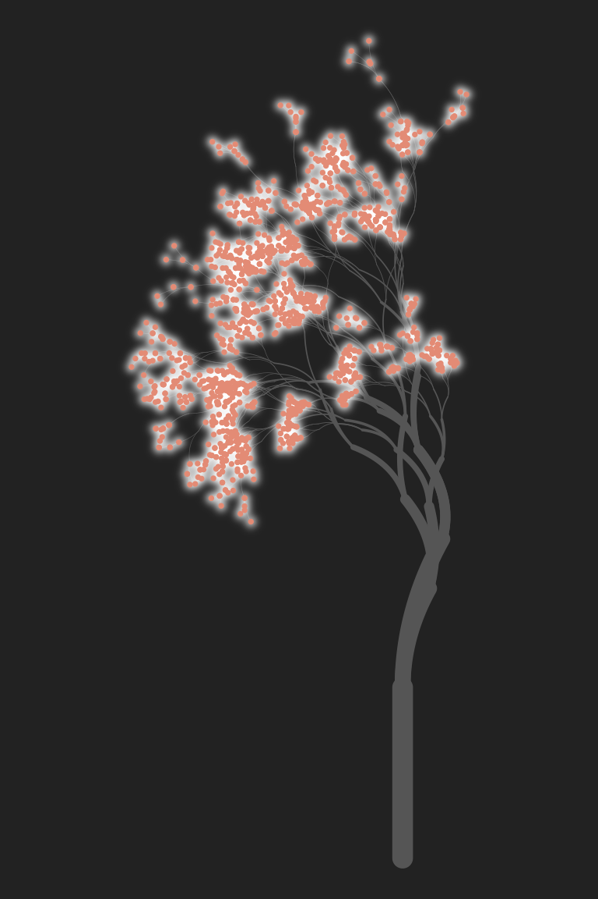
In the third example, sigma is interpreted as the standard deviation of the Gaussian blur added around each point: sigma = 5 specifies that this standard deviation is 5 pixels in size. The expand = 3 argument tells ggfx to “expand” each point by 3 pixels before drawing the glow. This can be handy for very small objects that would otherwise be difficult to see even with the added glow.
When written like this – with each layer stored as a named variable – ggfx code is very easy to read. I’ve quickly found myself adopting this code style any time I want to do pixel filtering. Constructing the plot piecewise and storing each layer as a variable makes it much easier to see what I’m doing!
As an aside, yes, there is also a with_inner_glow() function that applies the glow to the interior of each object rather than extending the glow outside it.
Dither
The previous example gives you a pretty good sense of the core mechanic of ggfx: the package supplies the with_*() functions that correspond to different kinds of pixel filtering operations. There are quite a lot of filters you might want to try. Dithering is a technique in which we reduce (or quantise) an image that has many colours down to an image with fewer colours, and then add some random (or not-so-random) noise to the coarser-grained image in a way that leaves it looking fairly natural. There are a lot of ways in which you can dither an image: one of the most famous is the Floyd-Steinberg algorithm. The Wikipedia page on Floyd-Steinberg dithering gives a nice (CC-licenced!) example using a kitten picture, shown to the left.


The original image is shown on the left. The image in the middle reduces the number of distinct colours in the image (i.e. quantises it) but doesn’t apply any dithering. It’s immediately obvious that there are artifacts in the image, and it doesn’t look like a very good approximation to the original. On the right, a dithering algorithm is applied. The image still uses the same small set of colours, but arranges the pixels in such a way that the local density of light and dark pixels gives the impression of shading.
The ggfx package supplies several dithering filters, including:
with_dither()uses Floyd-Steinberg ditheringwith_halftone_dither()uses halftone dotswith_ordered_dither()uses ordered ditheringwith_custom_dither()lets you build your own!
So let’s take a look. If we want to apply dithering to some generative art, it would help to have some generative art code! This time around, I’ll reuse the code that we wrote in the very first session to create “polar coordinate art” in ggplot2. To spare you the effort of revisiting, here’s the code we’re going to use to specify a base image:
set.seed(1)
polar <- tibble(
arc_start = runif(200),
arc_end = arc_start + runif(200, min = -.2, max = .2),
radius = runif(200),
shade = runif(200),
size = runif(200)
)
base <- ggplot(
data = polar,
mapping = aes(
x = arc_start,
y = radius,
xend = arc_end,
yend = radius,
colour = shade,
size = size
)
) +
coord_polar(clip = "off") +
scale_y_continuous(limits = c(0, 1), oob = scales::oob_keep) +
scale_x_continuous(limits = c(0, 1), oob = scales::oob_keep) +
scale_colour_viridis_c(option = "magma") +
guides(colour = guide_none(), size = guide_none()) +
scale_size(range = c(0, 10)) +
theme_void() +
theme(panel.background = element_rect(fill = "#aaaaaa"))The details to this don’t matter very much for this session. All that matters is that when we add geom_segment() to base, it produces radial art like the image shown below on the left. Then, on the right, we can see the effect of the with_dither() function. I’ve reduced the image to five distinct colours in order to exaggerate the dithering effect as much as possible. Any lower than this and the image degrades too much.
base + geom_segment()
base + with_dither(geom_segment(), max_colours = 5)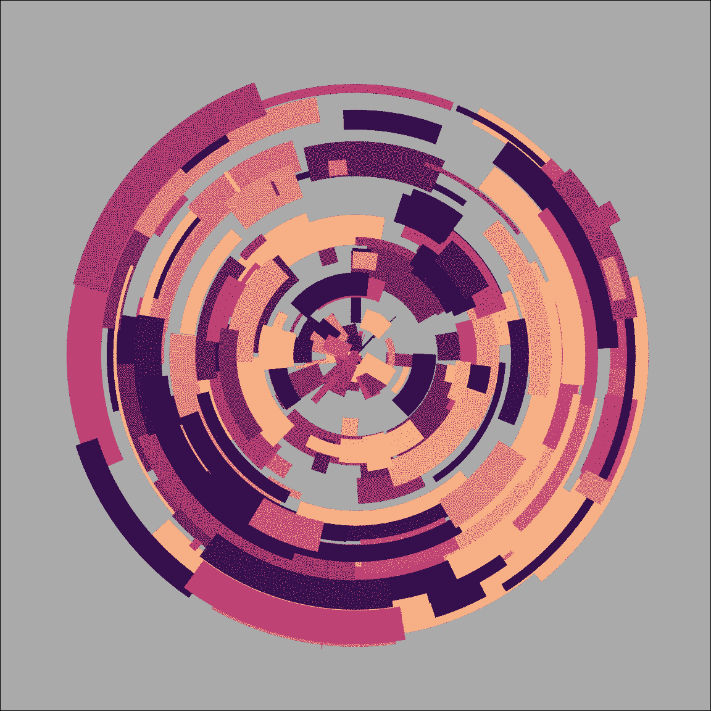
Floyd-Steinberg dithering gives the image a slightly grainy feel. It can be very handy when you don’t want the art to look too clean. Rendering the image in halftone gives it a more patterend feel, as the images below illustrate:
base + with_halftone_dither(geom_segment())
with_halftone_dither(base + geom_segment())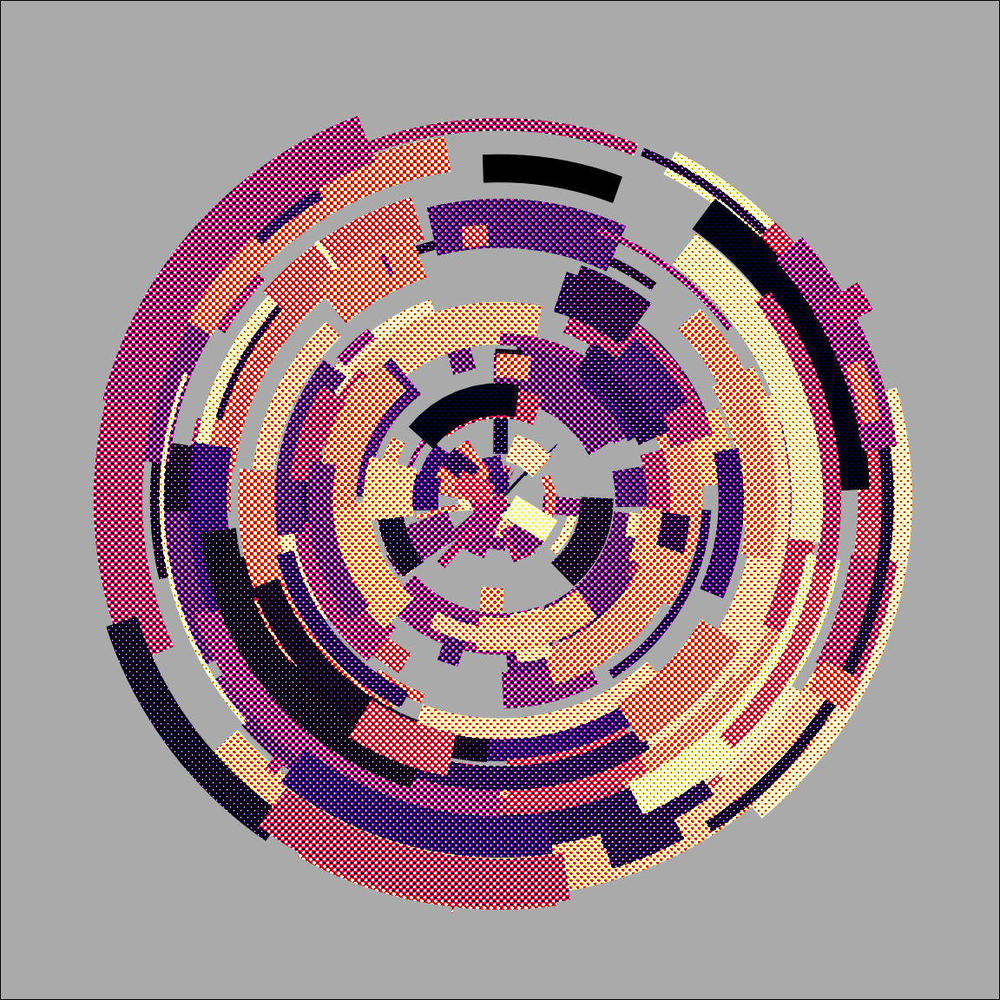
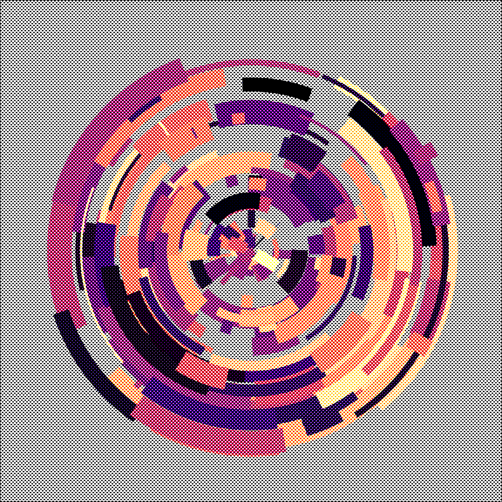
Notice the difference between these two examples. The with_*() functions in ggfx are quite flexible. You can pass a single layer as the input, or alternatively you can pass the whole image. In fact, if you’re comfortable with grid graphics, you can pass individual grobs too. This is discussed in the ggfx object support help page.
Mask
One of my favourite filtering tricks is to use with_mask() as a way of displaying one layer of the plot only when it overlaps with a second layer (referred to as the “mask”). To see why I love this so much, let’s use the ambient package to create a textured grid that we could draw using geom_raster(). I talked about this in the session on spatial noise tricks, so I won’t bore you by repeating the explanation. Instead, here’s the code to create a layer called texture:
texture <- geom_raster(
mapping = aes(x, y, fill = paint),
data = long_grid(
x = seq(from = -1, to = 1, length.out = 1000),
y = seq(from = -1, to = 1, length.out = 1000)
) |>
mutate(
lf_noise = gen_simplex(x, y, frequency = 2, seed = 1234),
mf_noise = gen_simplex(x, y, frequency = 20, seed = 1234),
hf_noise = gen_simplex(x, y, frequency = 99, seed = 1234),
paint = lf_noise + mf_noise + hf_noise
)
)We’re going to use texture as our background, but instead of plotting the whole thing we’re going mask it. Let’s create a polygon layer that will serve as the mask.
hex <- tibble(x = sin((0:6)/6 * 2 * pi), y = cos((0:6)/6 * 2 * pi))
mask <- geom_polygon(aes(x, y), hex, fill = "white")As before I’ll create a base plot to which we can add these geoms. The code isn’t very interesting, but I should be thorough and show it to you anyway:
base <- ggplot() +
theme_void() +
coord_equal() +
scale_x_continuous(expand = c(0, 0)) +
scale_y_continuous(expand = c(0, 0)) +
scale_fill_gradientn(
colours = c("#222222","#e83e8c"),
guide = guide_none()
)Okay, so now let’s take a look the two layers individually:
base + texture
base + mask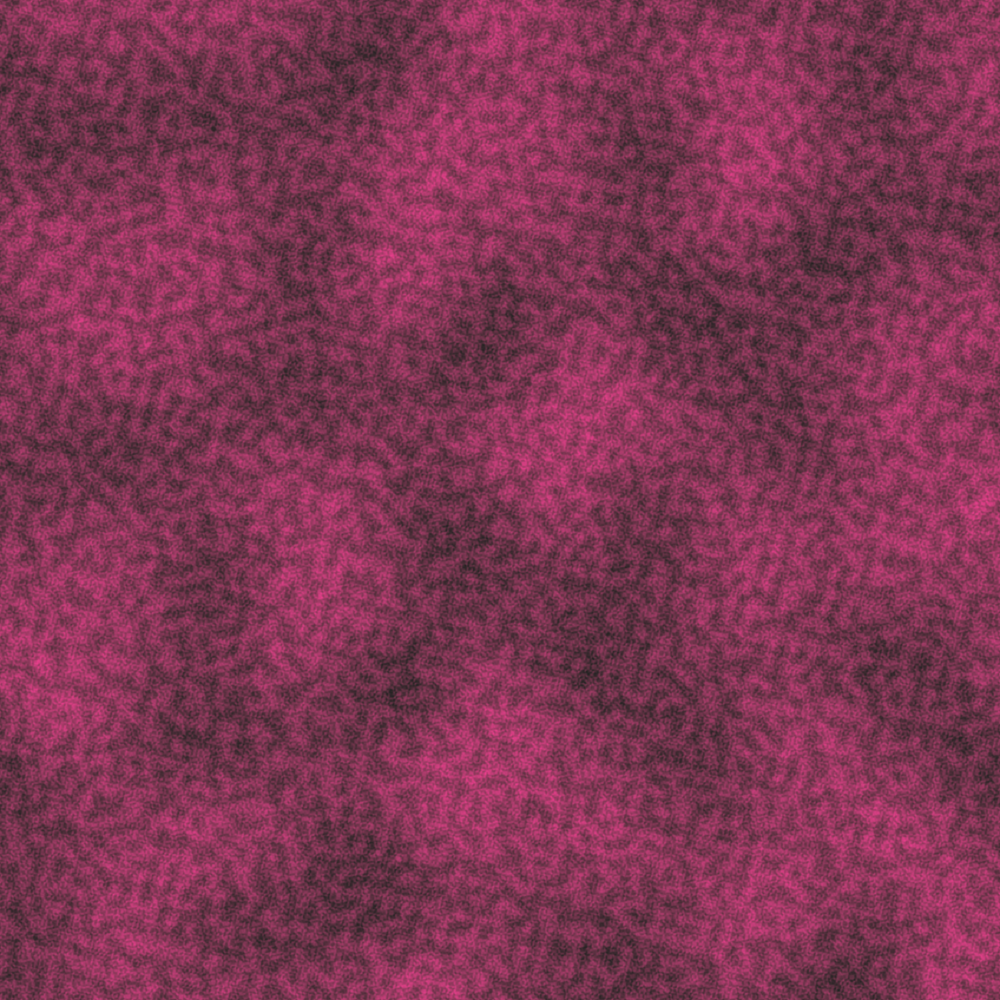
Gosh, I wonder what we could possibly do with a texture and a hexagon shape…
base +
as_reference(mask, id = "mask") +
with_mask(texture, "mask")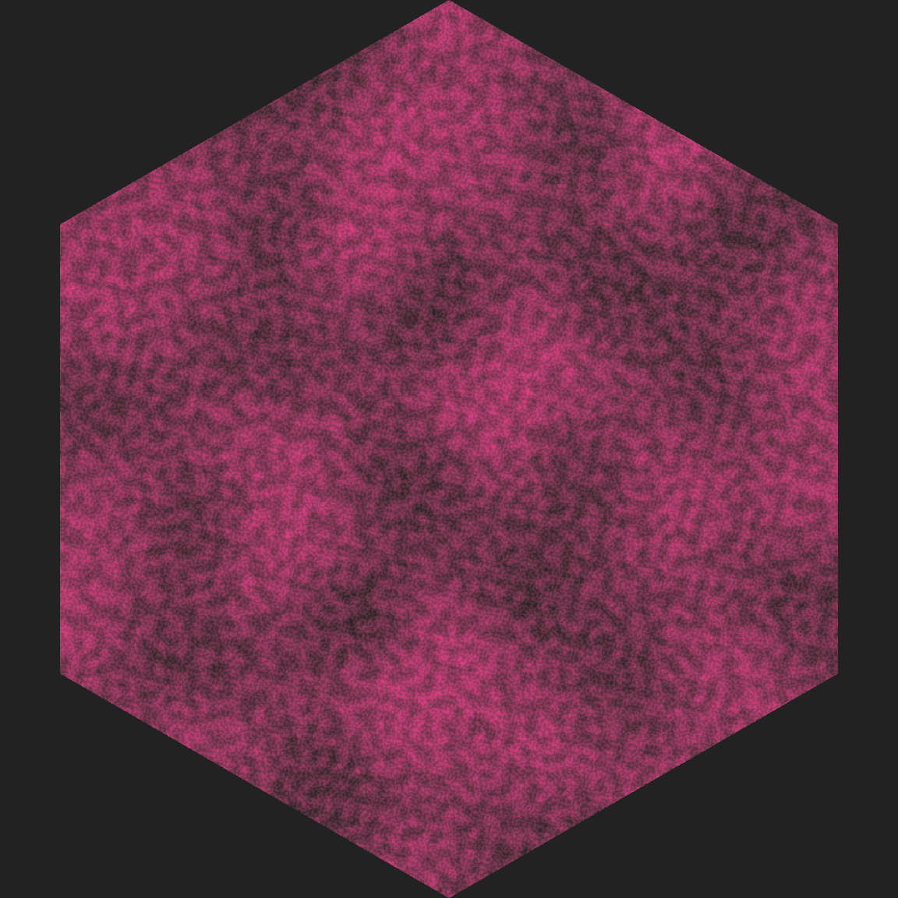
Huh. Well look at that… we have something that could quite easily turn into the design of a hex sticker. Amazing.
Before we move on I should explain why I called as_reference() in the previous example, and what that function does. To get a sense of it, let’s see what happens if I attempt the more “intuitive” strategy of trying to pass the mask layer directly to with_mask():
base + with_mask(texture, mask)Error in UseMethod("as.raster"): no applicable method for 'as.raster' applied to an object of class "c('LayerInstance', 'Layer', 'ggproto', 'gg')"The error message here complains that R doesn’t know how to convert the mask layer to a raster object. Remember at the beginning I said that ggfx works by converting everything to a pixel representation (i.e., turn our vector graphics layer into raster graphics). What’s going on here is that the second argument to with_mask() is allowed to be a “registered filter”, or it has to actually be a raster object. I’m not doing either one! I’m trying to pass it a raw ggplot layer. That’s where the as_reference() function comes in. Its role is to take a layer and “register” it as a filter (the id argument is used to give it a name) that can subsequently used as the mask.
There are a few functions in ggfx that work like that. Another one is the as_group() function. Suppose I want to apply a filter to several layers at once, but not necessarily to the whole plot. For example, suppose I want some text and a pretty border on my hex sticker, represented by these two layers:
border <- geom_path(aes(x, y), hex, colour = "white", size = 15)
text <- geom_text(
mapping = aes(x, y, label = text),
dat = tibble(x = 0, y = 0, text = "ART"),
size = 36,
colour = "white",
fontface = "bold"
) When I construct my mask, what I really want to do is apply it to all three layers: texture, border, and text should all be masked by the mask layer. To do that I pass texture, border, and text to as_group() to define the group; then I pass mask to as_reference() to register it as a filter; and then I apply with_mask(). Here’s how that works:
base + texture + text + border
base +
as_group(texture, text, border, id = "content") +
as_reference(mask, id = "mask") +
with_mask("content", "mask")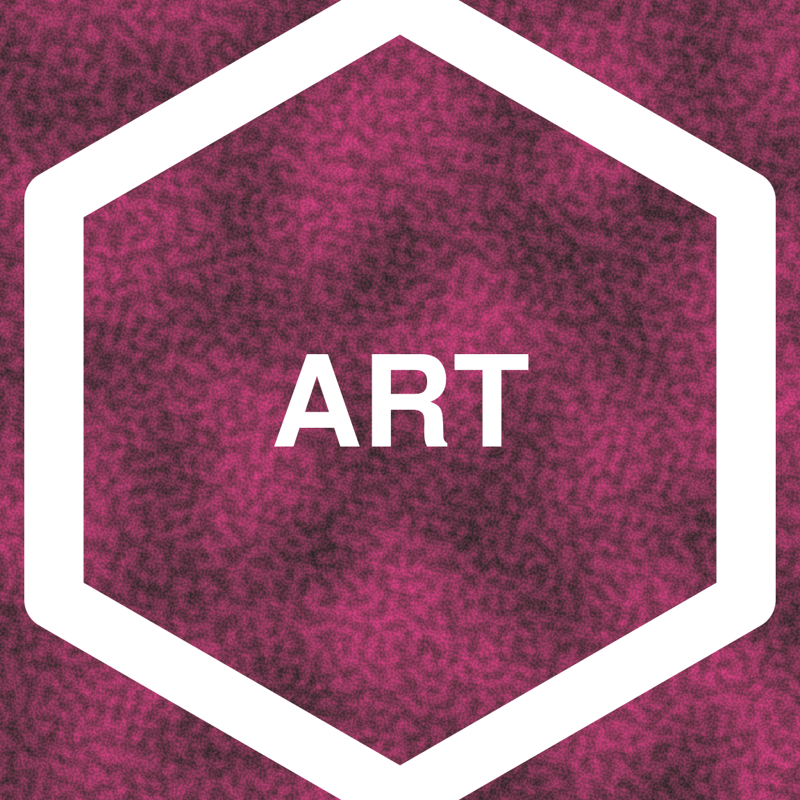

That’s awfully convenient :)
Displace
Displacement filters are conceptually simple, but extremely powerful, and can be a bit counterintuitive to work with in practice. The idea to shift all the pixels in one layer based on the pixel values in another layer (referred to as the displacement map). For example, a black pixel in the displacement map might be interpreted to mean “don’t move this pixel in the original layer”, whereas a white pixel might mean “move this 10 pixels to the right”. The idea of constructing a pixel value to displacement mapping makes conceptual sense to me, but I find it a little hard to visualise what that actually means. A worked example would probably help!
Let’s start by creating some ggplot layers that each contain semi-transparent triangles:
polygon_layer <- function(x, y, fill = "white", alpha = .5) {
geom_polygon(aes(x, y), fill = fill, alpha = alpha)
}
poly1 <- polygon_layer(x = c(1, 0, 0), y = c(0, 0, 1))
poly2 <- polygon_layer(x = c(0, 1, 1), y = c(0, 0, 1))
poly3 <- polygon_layer(x = c(.3, 1, 1), y = c(0, 0, .7))
poly4 <- polygon_layer(x = c(0, 0, .7), y = c(.3, 1, 1))Next, I’ll define a base plot and then show you what these polygons look like when drawn together:
base <- ggplot() +
coord_equal(xlim = c(0, 1), ylim = c(0, 1)) +
theme_void() +
theme(panel.background = element_rect(fill = "#333333"))
base + poly1 + poly2 + poly3 + poly4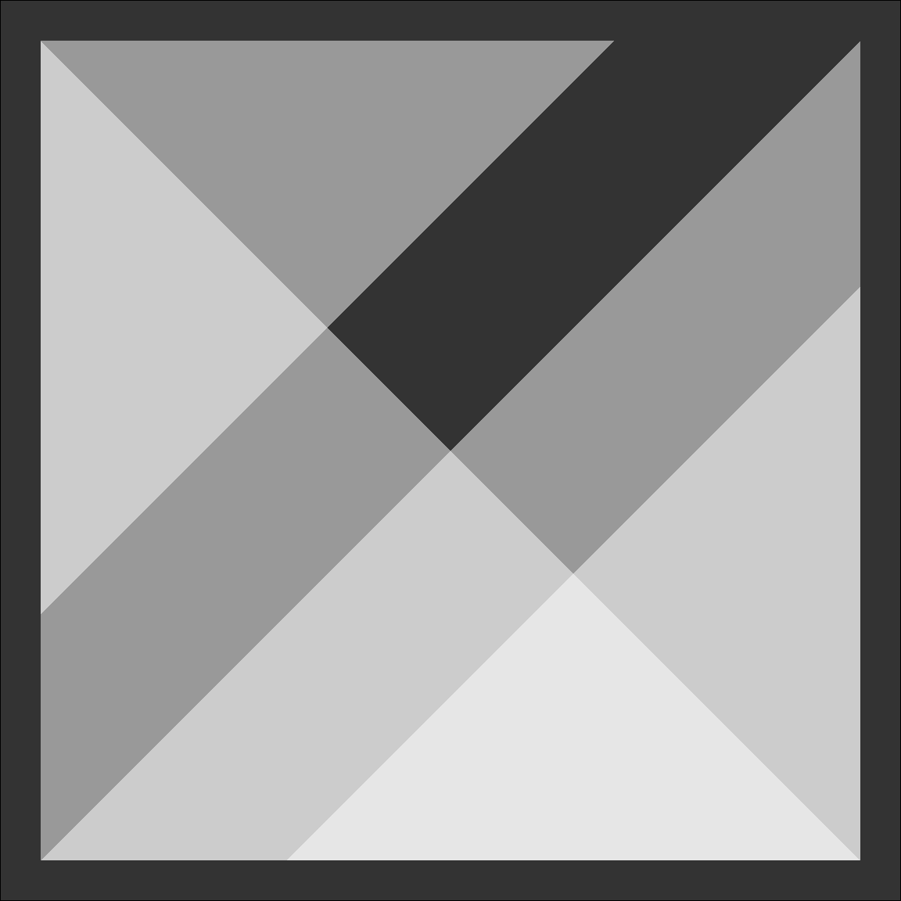
Later on, we’re going to use this as our displacement map. The easiest way to interpret this map (I think?) is to think about each of the shaded regions separately. Let’s start by thinking about the darkest area, the region that makes up the border of the image and the diagonal stripe in the center. When we go to “fill in” that part of the final image, we won’t grab the “same” pixel in the other image: instead we’re going to grab a pixel that is below and to the left. For the brightest areas (the two bright white triangles, one to the top left of the map and the other to the bottom right), we’ll displace in the other direction.
Okay, so if we’re going to do this, we will need an layer that can serve as the image to be displaced. I’ll keep it simple. Here’s a layer that plots the word "ART" using geom_text():
text <- geom_text(
mapping = aes(0.5, 0.5, label = "ART"),
size = 60,
colour = "black",
fontface = "bold"
)So here’s our process:
- Use
as_group()to convert the four polygon layers into a single group. - Use
as_reference()to register that group as a filter. - Use
with_displacement()to displace thetextlayer using the polygons.
Here’s the code, and the results:
base + poly1 + poly2 + poly3 + poly4 + text
base +
as_group(poly1, poly2, poly3, poly4, id = "polygons", include = TRUE) +
as_reference("polygons", id = "displacement_map") +
with_displacement(
text,
x_map = ch_alpha("displacement_map"),
y_map = ch_alpha("displacement_map"),
x_scale = 150,
y_scale = -150
)
Again, this is very pretty, but it probably needs a little explanation:
- When I called
with_displacement()I passed thetextobject first: that’s the “thing we will displace”. Next, I specified two displacement maps,x_mapandy_map. It is, after all, quite possible to use a different displacement map to describe how we find the displacement in the horizontal direction and the vertical directions! However, I haven’t done that here because it makes my head hurt. - When constructing the displacement maps I used
ch_alpha()to make clear that we should use the transparency value of each pixel as the basis for the displacement. That makes sense in this case because transparency is the thing that varies across the image. - The
x_scaleandy_scaleparameters specify the number of pixels to shift. Specifically, settingx_scale = 150means that the maximum difference in transparency should correspoind to a shift of 150 pixels.
To be perfectly honest, I find it hard to visualise the effect of with_displacement(). My spatial reasoning skills just aren’t good enough. So what I usually do is tinker until I find something I like. YMMV.
Blend
The last ggfx trick I want to mention is with_blend(). Blending filters compose two images together using a particular rule. For example, we could "darken_intensity" by selecting the darker of the two pixel values at each location. Or we could use a "plus" filter that just adds the pixel values together. Blending is a powerful technique and can be used to mimic the behaviour of other filters (e.g., a mask is really just a very particular type of blend). I’m not going to try to summarise all the different kinds of blend you can do. But I will point you to the documentation page for with_blend(), which provides a pretty good place to start and has links to other resources you can follow up on.
Meanwhile, I’ll give a simple example using an "xor" blend. I’ll return to our flametree plot as the basis for this example. The trunk and leaves plot layers below define the flametree image in solid white colour:
leaves <- geom_point(
data = leaf,
mapping = aes(coord_x, coord_y, colour = seg_col),
colour = "white",
size = 2,
stroke = 0
)
trunk <- geom_bezier(
data = tree,
mapping = aes(
x = coord_x,
y = coord_y,
size = seg_wid,
group = id_pathtree
),
colour = "white",
lineend = "round"
)Next I’ll create a triangle layer that is a solid white triangle on the lower right side of the image, but is otherwise empty:
triangle <- polygon_layer(
x = c(-4, 2, 2),
y = c(0, 0, 6),
fill = "white",
alpha = 1
)Because these images are binary valued the exclusive-or "xor" filter is easy to visualise in this case. If a pixel is white in exactly one of the two inputs (the tree or the triangle), that pixel will also be white in the output. Otherwise that pixel will be transparent. That gives us this:
base <- ggplot() +
theme_void() +
coord_equal(xlim = c(-3, 1), ylim = c(1, 5)) +
scale_x_continuous(expand = c(0, 0)) +
scale_y_continuous(expand = c(0, 0)) +
scale_size_identity(guide = guide_none())
base +
as_group(trunk, leaves, id = "tree") +
with_blend(triangle, "tree", blend_type = "xor")